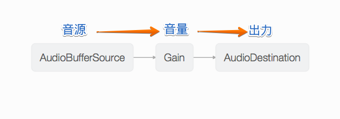

JavaScriptとWeb Audio事始め
自己紹介

azu
@azu_re
Web scratch, JSer.info
アジェンダ
- ウェブで音を扱う方法
- HTML Audio要素
- Audio要素の制限
- Web Audio API
HTML Audio要素
<audio src="music.mp3" autoplay />- Audio要素で音声ファイルを指定再生できる
- Img要素、Video要素の音声版
- 指定するだけなので簡単
Audio要素のいいところ

Audio要素の問題
- iOSやAndroidで制限がある
- ユーザーインタラクションで開始しないと再生できない
- 同時に再生できる音声が1つとなる制限
Audio要素の問題 - ユーザインタラクション
var audio = new Audio('sound.mp3');
// クリックしたら、再生
document.body.addEventListner('click', function (event) {
event.preventDefault();
// 再生開始
audio.play();
});
Audio要素の問題 - 同時再生数が1つ
- 複数の音を同時に扱えない
- オーディオスプライトという回避策がある
- 複数の音源を一つにまとめて、再生位置をずらして扱う
- JavaScript - スマホで音声再生をスムーズに行うためにオーディオスプライトを作成/使用する - Qiita
- Web Audio APIならこの制限はない
Web Audio API
Web Audio API
- Audioを扱うAPI
- AudioNodeやAudioParamを組み合わせて音を加工できる
- 複数の音を同時に鳴らせる
- 正確なスケジューリングが可能(どのタイミングで音を鳴らすか)
Web Audio API - サポートブラウザ

Web Audio API - サポートブラウザ
- IEやAndroidなどでサポートされてない(次期IEには載る)
- Flashを使ってシミュレート、フェールバックとしてAudio要素を使うものが存在する
- g200kg/WAAPISim
- CreateJS/SoundJS
- sebpiq/node-web-audio-api
Web Audio API - コード
// Nodeなどを管理する`context`
var context = new AudioContext();
// Nodeを作ってconnectしていく
var sourceNode = context.createBufferSource();
sourceNode.buffer = audioBuffer;// 音源データはBuffer
var gainNode = context.createGain();
sourceNode.connect(gainNode);
gainNode.connect(context.destination);
source.start(0, 0);// 0秒後にoffset0で再生開始
AudioNodeをつなぐ

AudioNodeとは
- 基本的には音源、フィルターや解析器などが
*Nodeとして用意されている nodeA.connect(nodeB)のようにつなぎ合わせる- シンプルなフローコントロールライブラリを書いた
- 最終出力は
AudioDestinationNodeというcontextが持つ特殊なNodeへconnectする - 作ったNodeは基本的に使い捨てなので再利用できない
Web Audio API - 問題
- ブラウザによって古い実装が混じってる
webkitprefix、playornoteOn、メソッド名の変更...- 大体はpolyfillで吸収できる
- 古いiOS(7.1)などで特殊な動作をすることがある
- iOSで最初の一回のみユーザインタラクションで始めないと再生できない
ライブラリ
- CreateJS/SoundJS
- goldfire/howler.js
- 定番的な立ち位置のライブラリ
- データのロード、再生、フェールバック、iOSの初回再生のハックなど
- mohayonao/web-audio-test-api
- Nodeで動くモック的なテストライブラリ
参考
- 音を扱うJavaScriptライブラリや記事 - Qiita
- O'Reilly Japan - Web Audio API
- Web Audio API 解説 - 01.前説 | g200kg Music & Software
- JavaScript - Web Audio APIのソースコード - Qiita
- HTML5で音を扱う3つの方法